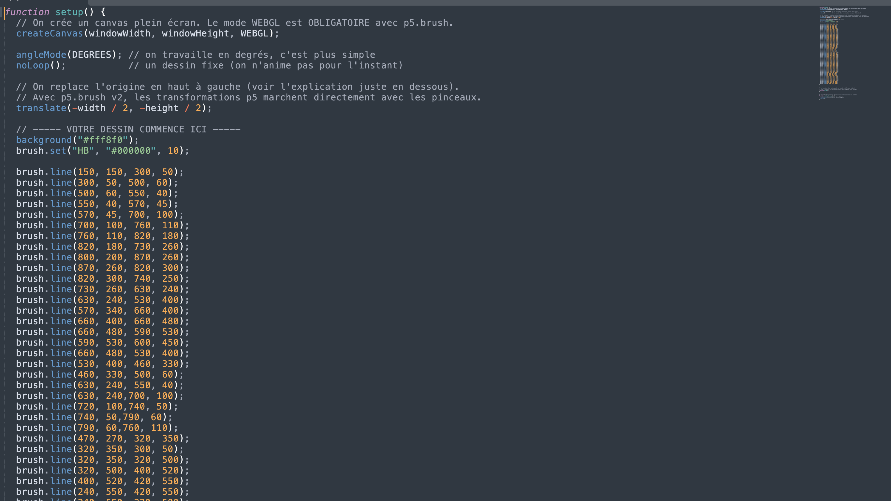
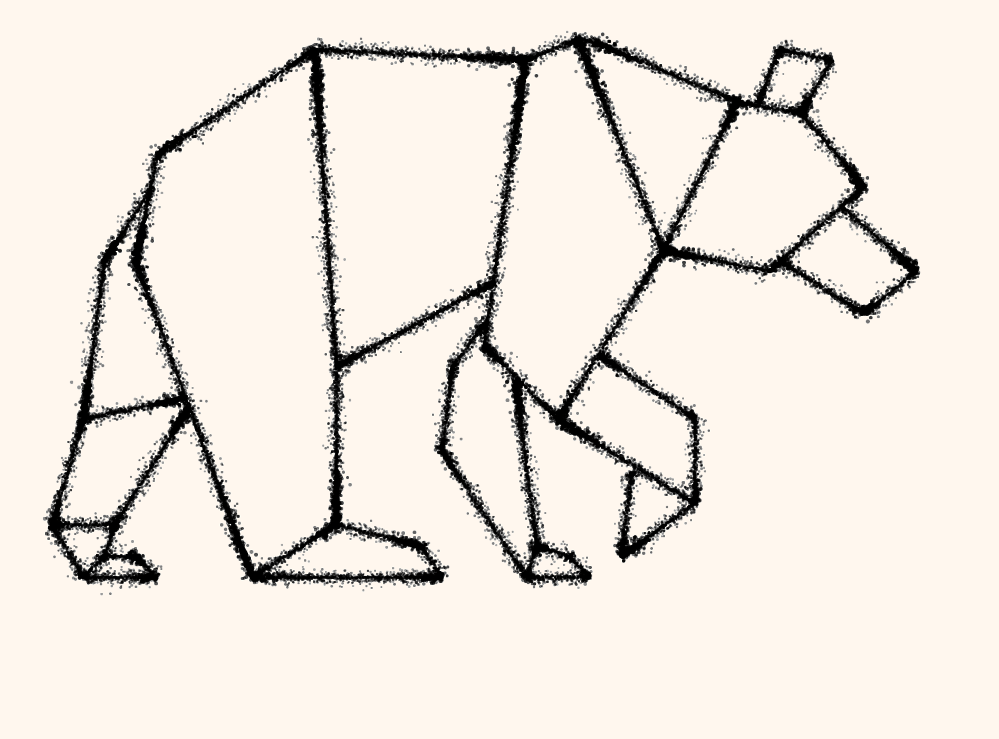

Ce projet explorait les possibilités de la création générative à travers le code.
L’objectif était de concevoir une composition visuelle originale à l’aide de JavaScript et de la bibliothèque P5.js Brush.
J’ai assuré l’ensemble de la conception, en utilisant la programmation comme un véritable outil de création graphique pour expérimenter de nouvelles formes d’expression visuelle.
J’ai débuté le projet par une phase de recherche visuelle afin d’identifier une référence graphique pertinente.
Après avoir analysé sa composition, ses formes et sa palette de couleurs, j’ai retranscrit ces éléments en code avec P5.js Brush.


Plusieurs itérations et ajustements ont ensuite été réalisés pour affiner le rendu et garantir une interprétation fidèle du visuel de référence.